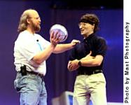

They got me...
The highlight of the keynote (for me) was a video that some folks put together about me and the past 10 years. They got a pile of old video clips and photos, and they interviewed many of the people I've worked with and for. And they got my wife and daughters in on the scheme to contribute their own segments. I don't know how they managed to keep it a secret (particularly my 7 year old), but they did.Thanks everyone!
| June 28, 2005 |